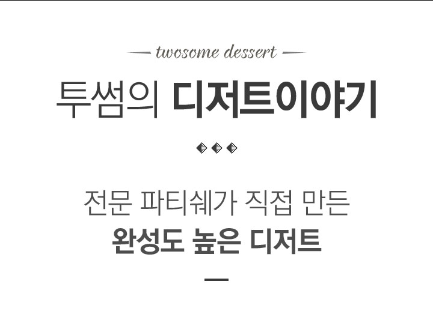
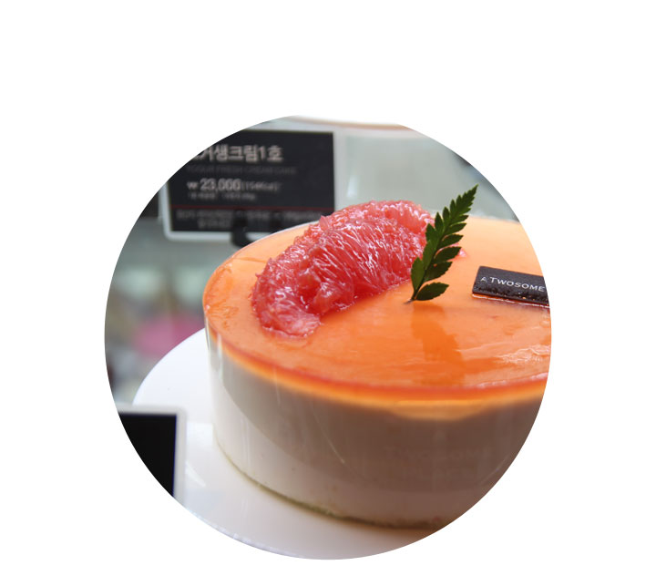
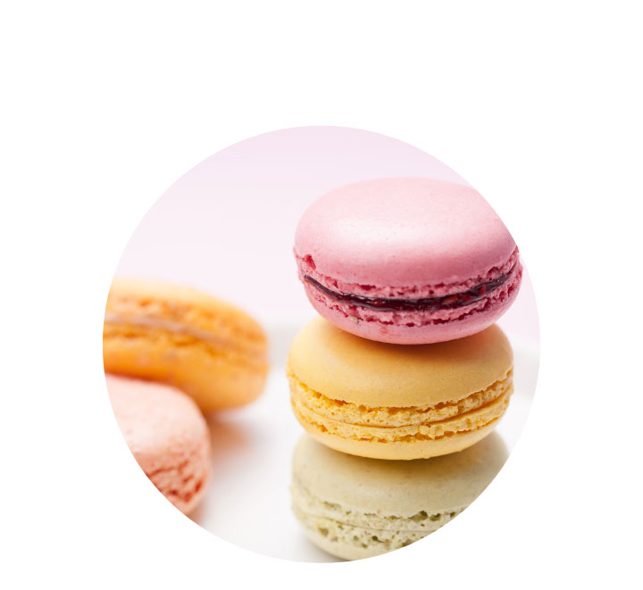
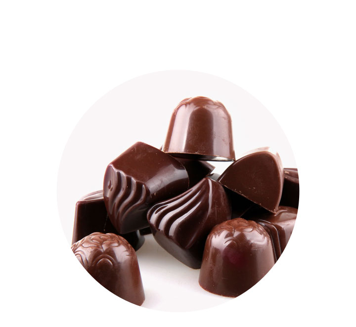
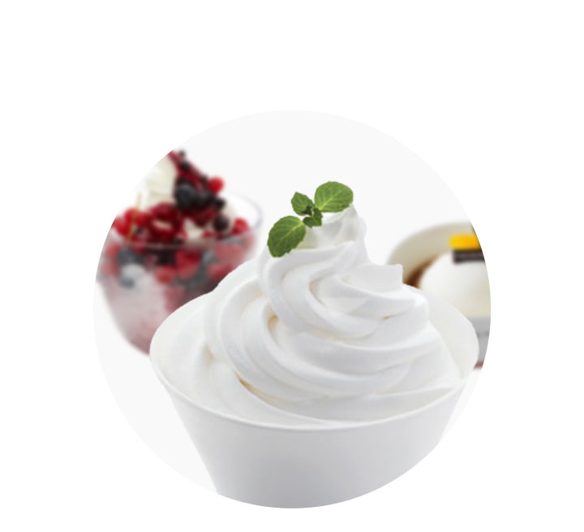
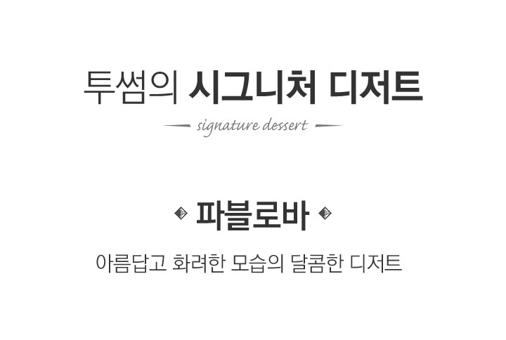
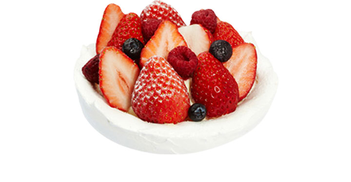
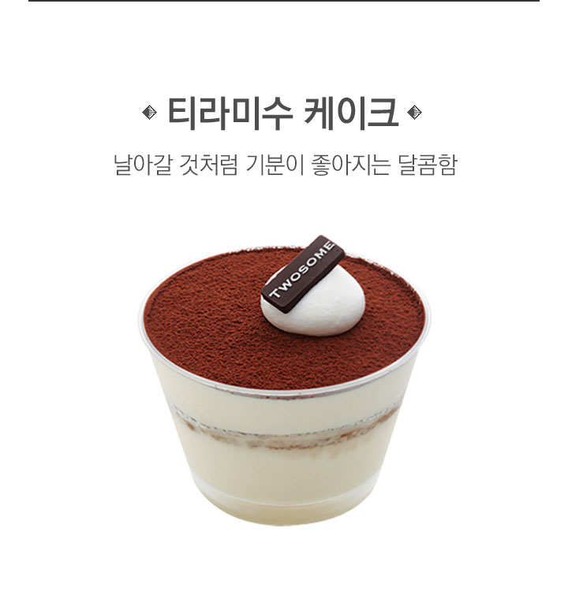

투썸 디저트는 전문 파티쉐가 직접 만들어
완성도를 높인 케이크는 물론,
프랑스 고급 디저트인 마카롱,
정통 이탈리안 티라미수와
아포카토, 달콤바삭한 머랭디저트 파블로바와
입안에서 부드럽게 녹는 생 초콜릿까지,
다양한 디저트를 만나볼 수 있습니다.
프리미엄 벨기에 초콜릿, 발로나
카카오파우더, 마스카포네치즈, 원유생크림,
바닐라 빈 등 재료 본연의 맛을 살린
투썸의 디저트는 달지 않고
고급스러운 맛과 품질을 유지합니다.

- 케이크
-
- 프리미엄 스타일
- 정통 유럽풍 디저트의 레시피로 하나 하나 완성도가 높으면서도 새로운 스타일의 맛과 멋을 살린 프리미엄 스타일의 달콤한 디저트. 가족, 친구, 연인 여럿이 모여 투썸의 프리미엄 케이크가 더욱 즐겁고 달콤한 시간을 선사합니다.

- 마카롱
-
- 프랑스 왕실 디저트
- 프랑스 왕실에서 즐겨먹던 마카롱은 아몬드 가루와설탕, 달걀 흰자로 구워 만든 수제 디저트 입니다. 눈길을 사로잡는 생생한 컬러, 한입 베어 물었을 때 녹아 내리듯 부서지는 크런치함, 풍부한 크림 촉촉한 부드러움, 입안가득 퍼지는 달콤함을 소중한분들께 선물하세요.

- 초콜릿
-
- 프리미엄 초콜릿 컬렉션
- 벨기에산 초콜릿과 엄선된 원료로 만들어낸 프리미엄 컬렉션, 취향에 따라 고를 수 있는 다양한 맛의 프랄린& 생 초콜릿, 쇼콜라티에의 노련함이 선사하는 최상의 부드러움을 느낄 수 있는 투썸의 프리미엄 초콜릿 컬렉션을 경험해보세요.

- 아이스크림
-
- 투썸만의 특별한 아이스크림
- 건강한 유산균이 들어있는 요거트 아이스크림 부터 뜨거운 에스프레소의 진한 커피향이 어우러진 아포카토, 제철 원료와 달콤한 디저트 토핑이 올라간 빙수까지 투썸만의 차별화된 맛을 볼 수 있습니다.


파블로바는 '정령' , '우아한 한 마리의 백조' , '환상의세계 에서 온 사자' 등의 닉네임을 갖고 있을 만큼 대중으로부터 많은 사랑을 받았던 전설적인 러시아의 발레리나 '안나 파블로바' 가 1920년대 호주, 뉴질랜드를 여행했을 때, 그녀가 묵었던 호텔의 쉐프가 그녀를 위해 존경하는 의미에서 만들어 디저트로 내 놓았다는 이야기를 갖고 있습니다.
- 아름답고 화려한 모습의 달콤한 디저트
- 그녀의 무용만큼이나 아름답고 화려한 모습을 하고, 바삭한 첫 식감과는 달리 입안에서 사르륵 녹아 내리는 달콤한 디저트 파블로바, 이제 투썸 전체 매장에서 만나 볼 수 있습니다.

18세기 이탈리아의 대표적인 가정식 디저트에서 출발해 프랑스에 옮겨가 본격적으로 디저트로 발달한 티라미수는, 에스프레소 시럽에 담갔다 꺼낸 케이크 사이에 크림치즈를 채워 층을 만든 후, 그 위에 초콜릿을 씌운 케이크를 말합니다.
- 날아갈 것 처럼 기분이 좋아지다
- 사람들이 맛을 보면 할 말을 잊을 정도라는 이 디저트는, "날아갈 것처럼 기분 좋아지다" 라는 뜻을 갖고 있습니다. 기분 좋은 달콤함!! 투썸의 티라미수가 갖고 있는 의미입니다.